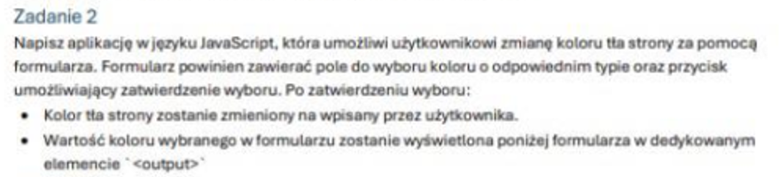
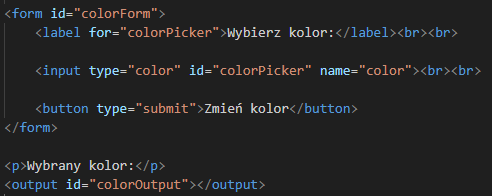
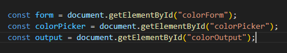
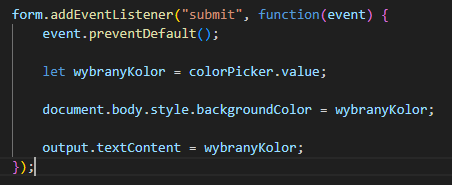
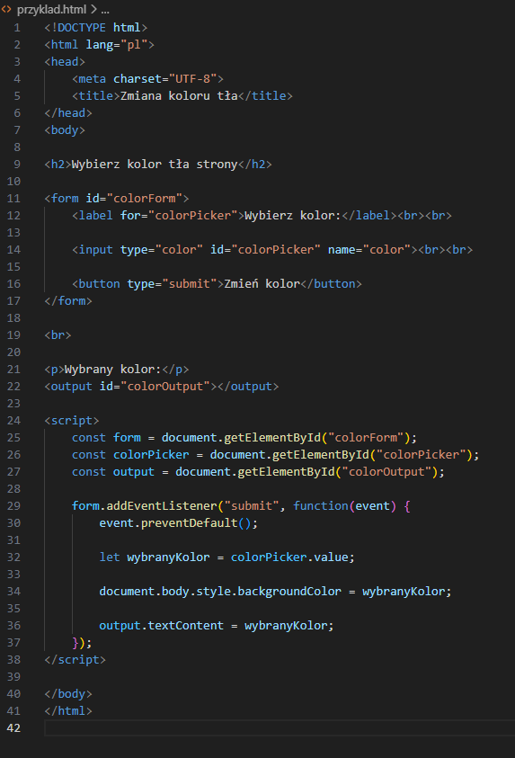
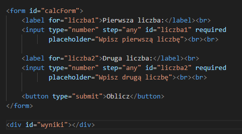
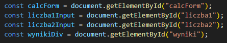
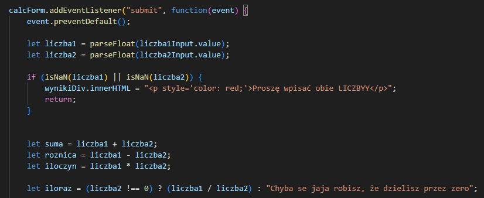
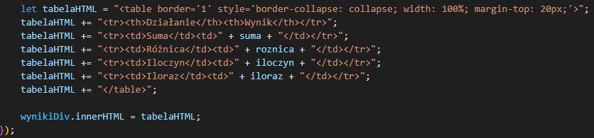
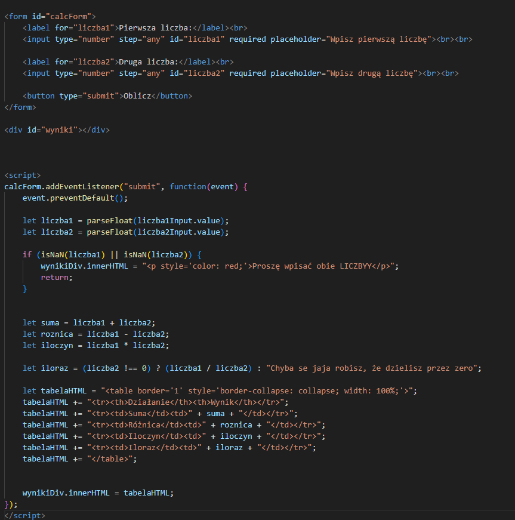

mamy tutaj w pierwszym podpunkcie wczytać od użytkownika 10 liczb całkowitych i zapisać je w tabeli
zaczynamy od stworzenia naszej tabelki, wpisując:
let tablica = []; - jest to tworzenie naszej tablicy o nazwie: "tablica"
Czytamy dalej i widzimy też, że będziemy potrzebować średniej arytmetycznej. Dlatego stwórzmy sobie zmienną średnia
let suma = 0; - tworzymy zmienną "suma", do której będą dodawane liczby ((w następnym kroku))
Następnym krokiem będzie stworzenie pętli for która będzie nam wczytywać te 10 liczb:
Jak to masz to już połowa sukcesu.... może nie połowa, bo dopiero zrobiliśmy pierwszy punkt tego zadania, ale wiesz, mówią że na początku jest najgorzej
Dlatego kopsnij se dzika i lecim do następnego. Następny podpunkt jest taki że musimy sprawdzić ile liczb w tablicy jest większych od średniej arytmetycznej wszystkich elementów
Brzmi okropnie?? Nie noo, aż takie złe nie jest. Zacznijmy w sumie od zrobienia naszej średniej. Bo jedyne co mamy to tylko jakieś liczby w tabeli i sume (bo nam się dodawało)
let srednia = suma / tablica.length; - obliczamy średnią, dzielimy sume przez długość naszej tabelki (czyli 10)
zacznijmy od stworzenia zmiennej jaką będzie np. "licznik" i spokojnie, możecie nazwać se jak chcecie. On będzie nam po prostu liczył ile liczb spełnia ten warunek (ile jest większych od średniej)
Musimy na koniec napisać ile liczb jest większych od średniej, dlatego jak już wiemy z poprzedniego musimy użyć document.write by wypisało nam to w html.. więc piszemy:

No to zadanie drugie, jak widzimy musimy coś zrobić z kolorkami strony, zacznijmy od tego że musi tam być zrobiony
Formularz z wyborami. Jak pewnie pamiętasz formularz robiliśmy wtedy jak było kolokwium z html. Tutaj zrobimy podobnie
(pamiętaj by formularz zamieścić w html, a nie w js)

Już tłumaczę skąd się wzięły te formularze i co one robią
No to tak:
<form id="colorForm"> - form to formularz, a id="colorForm" możemy se dać inne id, byle by się nam nie pomieszało, bo w js będziemy używać
<input type="color" id="colorPicker"> - type="color" daje nam specjalne pole do wyboru koloru, możemy sobie tam wybierać kolorek (przeglądarka sama daje tą palete barw), "name" w sumie nie musimy dawać
<button type="submit">Zmień kolor</button> - dosłownie button sumbit, zwyczajny jak kolor gówna w kiblu, no chyba że masz biegunke
<output id="colorOutput"></output> - za pomocą tego będziemy wyświetlać nasz wynik "czyli kod koloru np: #00ff99"
No i to co teraz mamy to jest formularz wybierania kolorku, ło taki oo
=====================================
Wybrany kolor:
=====================================
Dobra to teraz trzeba zrobić by to coś działało i przełączało nam kolorek w stronce
na samym początku jak mamy połączony kod z html to musimy się łodwołać do tego co my tam mamy, odwoujemy się w sposób następujący. Dajemy sobie zmienną "const form", by ona
potem sobie dajemy document.getElementById("idnaszewhtml")
Czyli tak patrząc na nasz kod html to w tym wypadku będziemy mieli:

const form = document.getElementById("colorForm"); - odwołujemy się do całego colorForm i zapisujemy w zmiennej const "form"
const colorPicker = document.getElementById("colorPicker"); - odwołujemy się do colorPicker i zapisujemy w zmiennej const "colorPicker"
const output = document.getElementById("colorOutput"); - odwołujemy się do colorOutput i zapisujemy w zmiennej const "output"
Co następnie???
Następnie musimy sprawić by ten guzik działał, w javascripcie nasłuchujemy czy osoba wcisnęła guzik poprzez EventListener

No to tak bez zbędnego pieprzenia głupot, tłumaczę o co w tym wszystkim biega:
form.addEventListener("submit", function(event) {} - nasłuchujemy wysłania formularza "czy osoba wcisnęła guzik"
event.preventDefault(); - to jest tutaj bardzo ważne, bo bez tego kod nie zadziała, to sprawia że stronka się nie odświeża, bo po wciśnięciu buttona autoamtycznie by się odświeżyła, a to jest taka blokada u know
let wybranyKolor = colorPicker.value; - zmienna "wybranyKolor" która przyjmuje aktualną wartość pola, czyli ten kod tego koloru np. #440550
document.body.style.backgroundColor = wybranyKolor; - to coś sprawia że kolor strony się zmienia i jest fajrant
output.textContent = wybranyKolor; - no i wypisanie kodu koloru pod formularzem
Czy to było ciężkie??
Nie wydaje mi się, jak poćwiczysz to dasz radę. Tylko trzeba pare rzeczy zapamiętać. Lecimy dalej... ehh, teraz tylko zadanie 3,4 i 5.. strzele sobie w łeb
Końcowy kod będzie wyglądał tak:

No to zadanie trzecie, tym razem musimy zrobić kalkulator czterech podstawowych działań
Zacznijmy od tego, że trzeba zrobić formularz do wpisywania liczb. Tak jak w poprzednim zadaniu
zrobimy to w html, bo tam jest miejsce na takie rzeczy. JS to tylko obsługa

Już tłumaczę co tu się dzieje:
<form id="calcForm"> - nasz formularz kalkulatora, dajemy mu id="calcForm" żeby się później do niego odwołać
<input type="number" step="any" id="liczba1" required> - type="number" sprawia że można wpisywać tylko liczby
step="any" pozwala na wpisywanie liczb zmiennoprzecinkowych (np. 3.14), a required oznacza że pole musi być wypełnione
<input type="number" step="any" id="liczba2" required> - to samo dla drugiej liczby
<button type="submit">Oblicz</button> - nasz przycisk do obliczania
<div id="wyniki"></div> - tutaj będą się wyświetlać wyniki naszych obliczeń
A tak to wygląda na żywo:
=====================================
=====================================
Teraz czas na JS :DDD
Musimy sprawić żeby ten formularz działał i obliczał wszystko jak należy
Zacznijmy od pobrania elementów z HTML... identycznie jak w poprzednim zadaniu:

const calcForm = document.getElementById("calcForm"); - łapiemy cały formularz
const liczba1Input = document.getElementById("liczba1"); - pierwsze pole z liczbą
const liczba2Input = document.getElementById("liczba2"); - drugie pole z liczbą
const wynikiDiv = document.getElementById("wyniki"); - div gdzie będą wyniki
To teraz nasłuchiwanie tego
Teraz musimy nasłuchiwać kiedy ktoś kliknie przycisk "Oblicz" tak samo jak w poprzednim zadaniu:

... wiem jak to wygląda, ale spróbuję to wszystko jakoś wytłumaczyć
calcForm.addEventListener("submit", function(event) { - nasłuchujemy wysłania formularza
event.preventDefault(); - blokujemy odświeżanie strony (tak jak w poprzednim, bez tego nie zadziała)
let liczba1 = parseFloat(liczba1Input.value); - pobieramy pierwszą liczbę i zamieniamy na float
let liczba2 = parseFloat(liczba2Input.value); - to samo robimy z drugą liczbą
if (isNaN(liczba1) || isNaN(liczba2)) { - sprawdzamy czy użytkownik wpisał liczby
wynikiDiv.innerHTML = "<p style='color: red;'>Proszę wpisać obie LICZBYY</p>"; - jak nie wpisał to wyskoczy komunikat o tym
return;} - przerywamy funkcję
let suma = liczba1 + liczba2; - obliczamy sumę
let roznica = liczba1 - liczba2; - obliczamy różnicę
let iloczyn = liczba1 * liczba2; - obliczamy iloczyn (mnożenie jakby ktoś bardziej ułomny nie skumał)
let iloraz = (liczba2 !== 0) ? (liczba1 / liczba2) : "nigdy holero nie mnóż przez zero";
To jest ciekawe! To tzw. operator warunkowy (ternary). Działa tak:
Jeżeli liczba2 jest różna od zera (liczba2 !== 0) to wykonaj dzielenie (liczba1 / liczba2)
W przeciwnym razie (:) zwróć tekst "Chyba se jaja robisz, że dzielisz przez zero"
Teraz pokażemy wyniki w tabeli!
Musimy stworzyć ładną tabelkę z wynikami:

To już ostatnia część - tworzymy tabelkę HTML z wynikami:
let tabelaHTML = "<table border='1' style='border-collapse: collapse; width: 100%;'>"; - tworzymy tą pieprzoną tabelę, border to ten tego obramowanie, width by nie ucieło, a margin-top by miało trochę wolnego miejsca
tabelaHTML += "<tr><th>Działanie</th><th>Wynik</th></tr>"; - nagłówki tabeli
tabelaHTML += "<tr><td>Suma</td><td>" + suma + "</td></tr>"; - wiersz z sumą
tabelaHTML += "<tr><td>Różnica</td><td>" + roznica + "</td></tr>"; - wiersz z różnicą
tabelaHTML += "<tr><td>Iloczyn</td><td>" + iloczyn + "</td></tr>"; - wiersz z iloczynem
tabelaHTML += "<tr><td>Iloraz</td><td>" + iloraz + "</td></tr>"; - wiersz z ilorazem
tabelaHTML += "</table>"; - zamykamy tabelkę
wynikiDiv.innerHTML = tabelaHTML; - wstawiamy całą tabelkę do naszego diva
Gotowe
To już wszystko, nasz wspaniały kalkulator działa, a przynajmniej powinien
Najważniejsze do zapamiętania
Końcowy kod będzie wyglądał tak:
